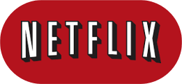

Privacidade Hackeada

Assista o trailer
documentario completo

Eles pegaram seus dados, assumiram o controle, hackearam a democracia e
estão colocando em prática um projeto de poder ultradireitista. Existe uma
realidade filtrada nas plataformas digitais, onde é possível criar e
espalhar propaganda direcionada a alvos específicos e vulneráveis,
selecionados por meio de cruzamento de dados digitais, o Big Data.
Esse é o tema central do recém-lançado Privacidade Hackeada (The Great Hack,
documentário, 2019, Netflix, 2h19), que expõe o perigoso mundo da exploração
de dados através de histórias reais de diferentes lados do escândalo
Cambridge Analytica/Facebook. Trata de como a internet pode e está sendo
usada para manipular indivíduos, um a um, e dividir o mundo, com
consequências em eleições sérias e que merece a nossa reflexão dos EUA ao
Reino Unido, passando pelo Brasil.
O documentário tem participação especial de
David Carrol
l
, professor universitário que se envolveu numa batalha judicial com a
Cambridge Analytica para reclamar os seus dados, e de
Carole Cadwalladr
, jornalista do The Guardian que, junto com o delator (whistleblower, em
inglês) Christopher Wylie, tornou pública a primeira parte da história
sobre a Cambridge Analytica.